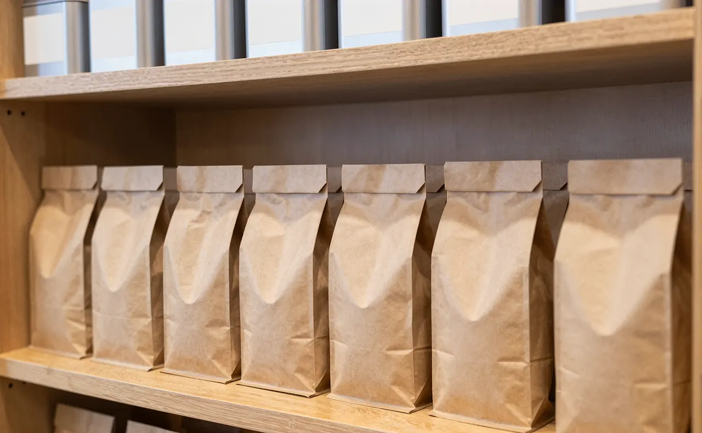

Tự động hóa AI
Tự động chăm sóc khách hàng sau mua: nhắc mua lại, xin đánh giá, chúc sinh nhật qua Zalo ZNS và email
Tìm một khách mới tốn tiền quảng cáo, còn khách cũ thì đã biết bạn, chỉ cần được nhắc đúng lúc. Nhiều cửa hàng nhỏ bỏ ngỏ khâu này vì không có người theo dõi từng khách. Bài này hướng dẫn dựng các luồng chăm sóc sau mua chạy tự động: gửi gì, gửi lúc nào, qua kênh nào và những giới hạn cần tôn trọng.
Tự động chăm sóc khách hàng sau mua là cài sẵn các tin nhắn gửi đến khách theo mốc thời gian hoặc sự kiện sau mỗi đơn hàng, thay vì nhân viên nhớ và nhắn tay. Các luồng thường dùng gồm: cảm ơn và xác nhận đơn, hướng dẫn sử dụng sau khi giao, hỏi thăm và xin đánh giá sau vài ngày dùng, nhắc mua lại khi sản phẩm sắp hết theo chu kỳ, chúc mừng sinh nhật kèm ưu đãi, và tin mời quay lại cho khách lâu không mua. Kênh phổ biến ở Việt Nam là Zalo (tin ZNS gửi theo số điện thoại, tin trong Zalo OA) và email. Để chạy được, bạn cần dữ liệu đơn hàng có ngày mua, sản phẩm, số điện thoại, và sự đồng ý nhận tin của khách.
Bài này khác bài tự động trả lời khách trên Zalo OA và Facebook: ở đó chatbot trả lời khi khách nhắn trước, còn ở đây doanh nghiệp chủ động liên hệ khách đã mua, theo lịch đã định.
Vì sao nên tự động hóa khâu sau mua
Trong một cửa hàng nhỏ, chăm sóc sau mua thường phụ thuộc vào trí nhớ của chủ shop hay một nhân viên. Khi đơn ít, việc nhắn hỏi thăm từng khách còn làm được; khi đơn lên vài chục mỗi ngày, nó là việc đầu tiên bị bỏ. Tự động hóa giúp:
- Không bỏ sót khách nào: mọi đơn đều kích hoạt cùng một chuỗi tin.
- Gửi đúng lúc: nhắc mua lại khi sản phẩm sắp hết, không phải khi chủ shop chợt nhớ.
- Nội dung nhất quán: giọng thương hiệu giống nhau dù ai đang trực.
- Nhân viên dành thời gian cho việc cần người: gọi khách lớn, xử lý phản hồi tiêu cực.
Tự động không có nghĩa là gửi nhiều. Một chuỗi chăm sóc tốt có ít tin, mỗi tin có ích cho khách, và dừng ngay khi khách không muốn nhận.
Các luồng chăm sóc sau mua thường dùng
| Luồng | Thời điểm gửi | Kênh gợi ý | Nội dung chính |
|---|---|---|---|
| Xác nhận và cảm ơn | Ngay sau khi đặt hoặc thanh toán | Zalo ZNS, email | Mã đơn, tổng tiền, thời gian giao dự kiến |
| Trạng thái giao hàng | Khi giao cho đơn vị vận chuyển, khi giao thành công | Zalo ZNS | Mã vận đơn, đường dẫn tra cứu |
| Hướng dẫn sử dụng | Một đến ba ngày sau khi nhận | Zalo OA, email | Cách dùng, bảo quản, video ngắn |
| Hỏi thăm, xin đánh giá | Sau khi khách đã dùng một thời gian, tùy sản phẩm | Zalo, email | Câu hỏi ngắn, đường dẫn đánh giá |
| Nhắc mua lại | Trước khi sản phẩm hết theo chu kỳ dùng | Zalo, email | Nhắc nhẹ, đặt lại một chạm |
| Sinh nhật | Đầu tháng hoặc đúng ngày sinh nhật | Zalo, email | Lời chúc, ưu đãi có hạn |
| Mời quay lại | Khi khách lâu không mua so với nhịp bình thường | Email, Zalo OA | Sản phẩm mới, ưu đãi cho khách cũ |
| Bảo hành, bảo dưỡng | Theo lịch của sản phẩm | Zalo ZNS, gọi điện | Nhắc lịch bảo dưỡng, đặt lịch |
Bạn không cần bật tất cả cùng lúc. Bắt đầu với hai luồng mang lại nhiều nhất cho ngành của mình, thường là xin đánh giá và nhắc mua lại, rồi thêm dần.
Viết nội dung cho từng luồng
Hướng dẫn sử dụng
Tin này giảm đổi trả và phàn nàn, vì nhiều lời chê thực ra đến từ dùng sai cách. Một đoạn ngắn và một video vài chục giây là đủ: cách dùng đúng, lỗi hay gặp, cách bảo quản. Với sản phẩm kỹ thuật, đính kèm đường dẫn tới trang hướng dẫn trên website.
Hỏi thăm và xin đánh giá
Gửi khi khách đã kịp dùng sản phẩm, không phải ngay lúc vừa nhận. Một tin ngắn hỏi thăm ("Chị dùng thấy thế nào ạ?") kèm đường dẫn đánh giá trên Google, trang sản phẩm hoặc fanpage, gửi như nhau cho mọi khách. Đừng lọc chỉ gửi đường dẫn cho khách trả lời tích cực: chính sách của Google cấm chọn lọc xin đánh giá tốt, cấm ngăn khách đánh giá xấu và cấm đổi quà, giảm giá lấy đánh giá; nhiều nền tảng khác cũng có quy định tương tự. Nếu khách phàn nàn, luồng tự động dừng các tin tiếp theo và chuyển ngay cho nhân viên xử lý. Cách xin đánh giá trên Google Maps có trong bài đưa doanh nghiệp lên Google Maps.
Nhắc mua lại
Hợp với sản phẩm tiêu hao: cà phê, trà, mỹ phẩm, thực phẩm, đồ cho thú cưng, vật tư văn phòng. Tính thời điểm gửi từ ngày mua và chu kỳ dùng ước tính của từng sản phẩm. Ví dụ minh họa: một tiệm cà phê rang xay ước tính khách mua gói 500 gram dùng khoảng bốn tuần, nên tin nhắc gửi vào ngày thứ 24, kèm nút đặt lại đúng loại khách đã mua. Chu kỳ thật nên chỉnh theo dữ liệu mua lại của chính cửa hàng sau vài tháng.

Chúc mừng sinh nhật
Chỉ gửi khi khách đã tự cung cấp ngày sinh và đồng ý nhận ưu đãi. Lời chúc ngắn, ưu đãi có thời hạn rõ ràng, không cần chờ khách mua mới hỏi ngày sinh: có thể hỏi khi khách đăng ký thành viên hoặc trong tin cảm ơn sau đơn đầu.
Mời khách quay lại
So thời gian từ lần mua cuối với nhịp mua bình thường của khách đó. Khách hay mua mỗi tháng mà ba tháng chưa quay lại là dấu hiệu cần chú ý. Tin mời quay lại nên có lý do thật: sản phẩm mới, mùa mới, ưu đãi riêng cho khách cũ. Với khách giá trị cao, một cuộc gọi của nhân viên thường hiệu quả hơn tin tự động.
Chọn kênh: Zalo ZNS, Zalo OA hay email
Zalo ZNS
Zalo Notification Service (ZNS) cho phép doanh nghiệp gửi tin thông báo đến người dùng Zalo qua số điện thoại, theo các mẫu tin đã được Zalo duyệt trước, tính phí theo tin gửi. Hợp nhất với tin giao dịch và chăm sóc: xác nhận đơn, trạng thái giao hàng, nhắc lịch hẹn, bảo hành, hỏi thăm sau mua. Điều kiện về tài khoản Zalo OA, loại mẫu, nội dung được phép (nhất là nội dung mang tính quảng cáo) và đơn giá do Zalo quy định và có thể thay đổi, nên cần kiểm tra trên tài liệu chính thức của Zalo trước khi thiết kế mẫu tin.
Tin trong Zalo OA
Với khách đã quan tâm hoặc đã nhắn tin với Zalo OA của doanh nghiệp, bạn có thể gửi tin tư vấn trong phạm vi chính sách hiện hành của Zalo về thời gian và loại tin. Kênh này hợp với hướng dẫn sử dụng, hỏi thăm, trả lời tiếp khi khách phản hồi.
Chi phí thấp, chứa được nội dung dài, hình ảnh, video, hợp với hướng dẫn sử dụng chi tiết, bản tin sản phẩm mới, mời quay lại. Nhược điểm là nhiều khách Việt quen đọc tin Zalo hơn email, và email dễ rơi vào thư rác nếu tên miền gửi chưa được cấu hình xác thực (SPF, DKIM, DMARC). Email quảng cáo phải có cách hủy đăng ký rõ ràng; quy định về thư điện tử và tin nhắn quảng cáo hiện nằm trong Nghị định 91/2020/NĐ-CP về chống tin nhắn rác, thư điện tử rác, cuộc gọi rác. Bộ Công an đang lấy ý kiến dự thảo nghị định thay thế, nên hãy kiểm tra văn bản đang có hiệu lực trước khi gửi hàng loạt.
Dữ liệu và công cụ cần có
Luồng tự động chỉ chạy đúng khi dữ liệu đơn hàng sạch. Tối thiểu mỗi đơn cần: mã đơn, ngày mua, ngày giao thành công, sản phẩm và số lượng, tên khách, số điện thoại, email nếu có, kênh mua, và trạng thái đồng ý nhận tin. Ngày sinh và sở thích là phần thêm khi khách tự cung cấp.
Về công cụ, có ba cách phổ biến:
- Phần mềm bán hàng hoặc CRM có sẵn tính năng chăm sóc: đơn giản nhất nếu bạn đã dùng và tính năng đủ. Bài CRM là gì, doanh nghiệp nhỏ có cần CRM không giúp bạn đánh giá.
- Google Sheets kèm công cụ tự động hóa như n8n: linh hoạt, chi phí thấp, kết nối được nhiều nguồn đơn (website, sàn, Zalo). Xem bài n8n là gì, có miễn phí không.
- Hệ thống riêng: khi có nhiều chi nhánh, nhiều nguồn dữ liệu và cần báo cáo chi tiết.
AI có thể giúp ở hai chỗ: viết lời nhắn cá nhân hóa theo lịch sử mua của từng khách (vẫn trong khuôn mẫu đã duyệt), và đọc phản hồi của khách để phân loại khen, chê, cần gọi lại. Với ZNS, nội dung phải theo mẫu đã duyệt, nên phần cá nhân hóa chỉ nằm ở các trường được phép điền.
Đồng ý của khách và tần suất gửi
Số điện thoại, email, ngày sinh, lịch sử mua đều là dữ liệu cá nhân. Luật Bảo vệ dữ liệu cá nhân số 91/2025/QH15 đã có hiệu lực từ 01/01/2026, nên hãy xin đồng ý rõ ràng khi khách mua hoặc đăng ký, nói mục đích dùng (thông báo đơn hàng, chăm sóc, ưu đãi), và cho khách cách từ chối dễ dàng. Tin giao dịch như xác nhận đơn khác với tin quảng cáo; hai loại nên tách bạch cả về nội dung lẫn sự đồng ý. Với trường hợp cụ thể, hãy hỏi người có chuyên môn pháp lý.
Về tần suất, đặt giới hạn số tin tối đa mỗi khách trong một khoảng thời gian, kể cả khi khách thuộc nhiều luồng cùng lúc. Khách vừa phàn nàn thì không nhận tin ưu đãi tự động; khách đã từ chối thì dừng hẳn.
Đo hiệu quả
Những con số đáng theo dõi: tỷ lệ khách mua lần hai trong một khoảng thời gian, số đánh giá mới mỗi tháng, tỷ lệ mua từ tin nhắc mua lại, tỷ lệ khách hủy nhận tin, và số phản hồi tiêu cực được chuyển cho nhân viên. Nếu tỷ lệ hủy nhận tin tăng, đó là dấu hiệu gửi quá nhiều hoặc nội dung không có ích.
Sai lầm thường gặp
- Gửi tin quảng cáo dồn dập cho mọi khách đã từng mua, bất kể họ mua gì.
- Nhắc mua lại sai thời điểm vì không tính chu kỳ dùng theo từng sản phẩm.
- Xin đánh giá ngay khi vừa giao, khách chưa kịp dùng.
- Tiếp tục gửi ưu đãi cho khách đang khiếu nại.
- Dữ liệu trùng lặp: một khách có ba số, nhận cùng một tin ba lần.
- Không có cách hủy nhận tin, hoặc hủy rồi vẫn nhận.
Chi phí triển khai tại Dream Labs
Tại Dream Labs, quy trình chăm sóc khách hàng là một trong 3 quy trình tự động của gói Tăng trưởng 15.000.000đ, cùng quy trình đơn hàng và sổ sách, báo cáo, có kết nối CRM, phần mềm bán hàng, triển khai khoảng 14 ngày và hỗ trợ 3 tháng. Gói Khởi động 5.000.000đ tập trung vào tiếp nhận, phân loại khách và trợ lý trả lời trên Zalo OA hoặc Messenger. Phí gửi tin ZNS, dịch vụ gửi email trả trực tiếp cho nhà cung cấp theo lượng tin, không nằm trong phí triển khai.
| Gói | Giá | Thời gian | Bao gồm |
|---|---|---|---|
| Khởi động | 5.000.000đ | 5–7 ngàyHỗ trợ 1 tháng | Không bỏ lỡ khách nhắn ngoài giờ, nhân viên thôi trả lời lặp lại, mọi khách mới nằm gọn trong một bảng.
|
| Tăng trưởngPhổ biến nhất | 15.000.000đ | 14 ngàyHỗ trợ 3 tháng | Đơn hàng, chăm sóc khách và báo cáo tự chạy: dữ liệu nhập một lần, đội ngũ dành giờ cho tư vấn và chốt đơn.
|
| Doanh nghiệp | Liên hệ | 30+ ngàyHỗ trợ 12 tháng | Một hệ thống vận hành riêng: xem số liệu theo thời gian thực, mở rộng quy mô mà không phải tăng người tương ứng.
|
Xem trang tự động hóa quy trình doanh nghiệp, trang chatbot Zalo OA và bảng giá. Bài chi phí và lộ trình triển khai tự động hóa cho SME giúp bạn chọn quy trình làm trước. Gửi mô tả cách bạn đang lưu đơn qua Zalo 0934 246 420 để được phác thảo luồng.
Câu hỏi thường gặp
Zalo ZNS là gì?
Là dịch vụ của Zalo cho phép doanh nghiệp gửi tin thông báo đến người dùng Zalo qua số điện thoại, theo mẫu tin đã được Zalo duyệt, tính phí theo tin. Thường dùng cho xác nhận đơn, giao hàng, nhắc lịch, chăm sóc sau mua.
Gửi tin chăm sóc qua Zalo có cần khách đồng ý không?
Nên có sự đồng ý rõ ràng khi khách mua hoặc đăng ký, nhất là với tin ưu đãi. Ngoài quy định về dữ liệu cá nhân, Zalo cũng có chính sách riêng về loại tin và nội dung được gửi.
Bao lâu sau khi mua thì nên xin đánh giá?
Khi khách đã kịp dùng sản phẩm, thường vài ngày đến một hai tuần tùy loại hàng. Gửi lời hỏi thăm kèm đường dẫn đánh giá cho mọi khách, không chọn lọc chỉ khách hài lòng, vì Google cấm cách làm này.
Shop nhỏ có cần CRM mới làm được chăm sóc tự động không?
Không nhất thiết. Một bảng Google Sheets ghi đơn hàng đầy đủ kèm công cụ tự động hóa như n8n đã chạy được các luồng cơ bản. CRM đáng dùng khi khách và đơn nhiều lên.
Tự động chăm sóc khác chatbot trả lời khách thế nào?
Chatbot trả lời khi khách nhắn trước. Chăm sóc sau mua là doanh nghiệp chủ động gửi tin theo mốc thời gian hoặc sự kiện sau mỗi đơn hàng, như hướng dẫn dùng, xin đánh giá, nhắc mua lại.
Gửi bao nhiêu tin là vừa?
Không có con số chung. Hãy đặt giới hạn số tin mỗi khách trong một khoảng thời gian, chỉ gửi tin có ích, và theo dõi tỷ lệ hủy nhận tin để điều chỉnh.
Chi phí làm chăm sóc khách sau mua tự động tại Dream Labs?
Quy trình chăm sóc khách nằm trong gói Tăng trưởng 15.000.000đ cùng quy trình đơn hàng và báo cáo. Phí gửi tin ZNS hoặc email trả riêng cho nhà cung cấp theo lượng tin.
Nguồn ảnh: ảnh minh họa do Dream Labs tạo bằng AI (ComfyUI · Z-Image Turbo), không phải ảnh chụp khách hàng hay dự án thật.
Bắt đầu cùng Dream Labs
Muốn khách cũ quay lại mà không phải nhắc từng người?
Nhắn Zalo cho Dream Labs sản phẩm bạn bán, nơi đang lưu đơn hàng và kênh liên hệ khách. Chúng tôi phác thảo luồng chăm sóc sau mua và báo giá rõ ràng.